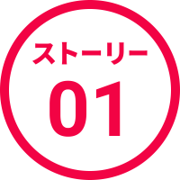
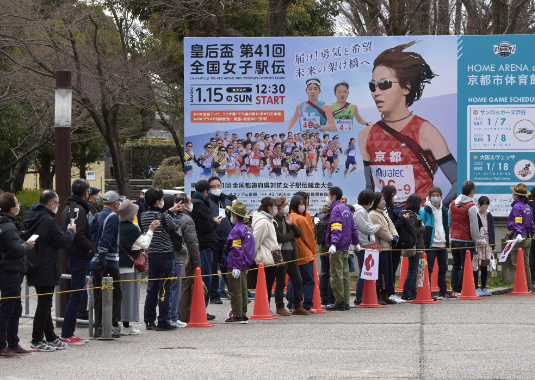
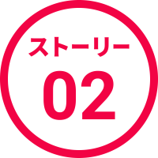
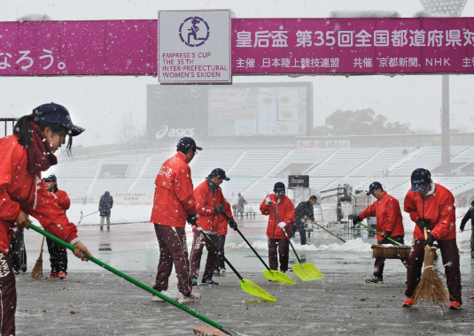
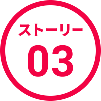
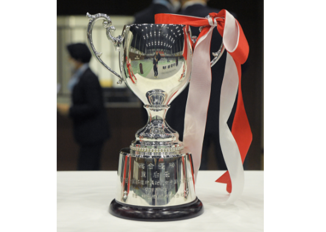
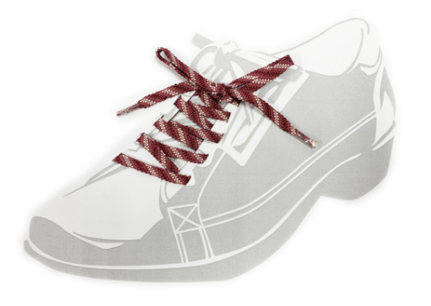
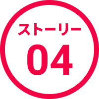
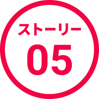
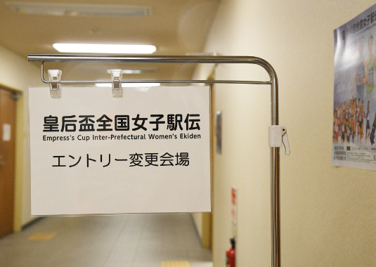

コースを力走する選手たちや沿道の応援、
テレビに映る表舞台とは違う、女子駅伝のサイド・ストーリーをご紹介します。

ひとつの駅伝大会を
2400名以上が支えている

全国女子駅伝は、たくさんの人々のご支援やご協力によって競技が成り立っています。
例えば2023年に開催された第41回大会の大会運営者は、大会役員が228名、審判員が498名、競技をサポートする高校生補助員が285名、さらにボランティア的な立場で運営に協力する自主整理員としてボーイスカウトやその指導者、高校生が818名と、1829名が競技の円滑な運営に尽力しています。
また支援協力として、京都府警察から545名、陸上自衛隊福知山駐屯地第7普通科連隊から18名、京都府医師会から11名、京都府看護協会から10名、京都市消防局救援隊から3名の皆さまの合計587名が、大会の円滑な運営を支援してくださっています。
上記以外にも協力企業の皆さまや開催当日のイベントに協力してくださる方々も含めると、さらに多くの方々が全国女子駅伝の円滑な運営と成功にご尽力いただいています。
※関係者の人数は第41回大会。

大雪がつないだ
心のタスキ

2024年に第42回大会を迎える全国女子駅伝だけに、記憶に残るさまざまなエピソードがあります。その中でも多くの駅伝ファンの記憶に残る大会が、雪の中で開催された第35回大会です。
前日から降り続いた大雪により、当日の朝には10cmを超える積雪がありました。さすがに大会の開催は難しいかと思われましたが、選手たちは駅伝のスタートを心待ちにしています。大会関係者は皆「選手の皆さんのこれまでの努力を無駄にしたくない。なんとか走らせてあげたい」と大会役員をはじめとする関係者、沿道を整理する予定の高校生補助員、さらには近隣住民の皆さまも懸命にコースの除雪作業に励みました。その結果、レースは予定時刻にスタートし、沿道には例年通り大勢の応援がありました。大会関係者と地域住民の皆さまによる心の一致団結を実感した大会となりました。

参加記念品は
京都らしいアイテム


村田機械では、1位から8位までの各チームに「村田機械杯」としてカップを贈呈するとともに、監督とコーチ、選手全員に写真立てを贈呈しています。写真立てを贈呈するのは、若い選手が国内トップクラスの先輩たちと走った大会の思い出を飾ってほしいという想いからです。
また、村田機械は全国女子駅伝に参加した全チームの監督、コーチ、選手全員に参加記念品を贈呈しています。京都での大会を記憶に残してほしいとの想いから京都の伝統工芸品である「京くみひも」の技術を用いた「京くみひも靴紐」を2023年の第41回大会から贈呈しています。このくみ紐は平安装束の重ね着パターン「襲色目（かさねのいろめ）」から、春の装いに使われた「一重梅（ひとえうめ）」の色目である「白」「淡紅」「蘇芳」を女子駅伝のイメージと重ね合わせて表現した大会オリジナルの靴紐です。

駅伝会場で
グルメ争奪戦が起こる？

全国女子駅伝の開催日、スタートとフィニッシュ地点となるたけびしスタジアム京都では、さまざまなイベントが行われています。中でも、各県人会の皆さんが郷土料理や物産を販売する「ふるさと屋台村」は、毎年行列ができるほどの人気です。例えば、沖縄県は沖縄そば、大分県は大分中津からあげ、宮崎県は焼酎のお湯割り（いずれも第41回大会実績）などを販売し、観客が各地の名物片手に大型ビジョンを見ながらレースを応援する姿が毎年の風物詩となっています。
また、日本中の人気駅弁を販売する「全国駅弁フェア」も、全国女子駅伝当日の名物イベントになっています。コロナ禍のため、しばらく中止されていましたが、いよいよ今回の第42回大会から復活します。以前は駅伝ファンがイベント開始の朝10時に行列を作り、販売開始後に即品切れとなった駅弁もあるそうですので、今回もまた熱い争奪戦が起こるかもしれません。

エントリー締切が
大会直前の理由とは

選手の参加申し込み締め切りは、レース間近とも言える12月最終月曜日の正午となっています。これは多くの都道府県チームが、中学生の選抜ではエントリー締め切り前週の日曜日に開催される全国中学校駅伝大会の結果を参考にし、高校生の選抜ではエントリー締め切り日前日の日曜日に開催される全国高校駅伝の結果を参考にしているためです。（曜日はその年の暦によります）
ただし、事故や疾病により診断書の提出やオフィシャルドクターの指示を受けた場合は、前日の午前に2名以内に限りエントリーメンバーの変更が認められています。
正式オーダーは、前日の午後に行われる監督会議の際に提出されます。正式オーダー提出後の選手変更は、レース当日の朝8時45分までに、医師の診断書かオフィシャルドクター診察の上で、補欠選手の中から変更が認められています。ただし、補欠選手を交代する選手の区間に補充することしかできず、区間を変更することは認められていません。
このように選手のエントリーだけでなく、オーダー提出や変更についても厳密なルールが定められています。